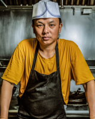

이력서 개요
- 
-
개인정보
김종찬
1987년 36세 남성
010-1234-5678 (Phone)
주소 :
광주광역시 서구 농성동
-
희망조건
Sous Chef 직급
French 종목
Fine Dining 규모
Cold-part 파트
정규직 고용 형태
-
주요경력
신라호텔제주 3년
보나세라 4년
워커힐호텔 4년
총 11년
-
학력·학위
프랑스 르 꼬르동 블루 졸업
경희대학교 호텔조리과 졸업
한국국제조리고등학교 졸업
최종학위 학사
학력사항
-
2011. 03 ~ 2015. 02
졸업
-
르 꼬르동 블루
French 전공
4.34 / 4.5 학점
-
2006. 03 ~ 2011. 02
졸업
-
경희대학교 서울캠퍼스
호텔조리학과 전공
3.84 / 4.5 학점
-
2004. 03 ~ 2006. 02
졸업
-
한국국제조리고등학교
종합조리과 전공
경력사항
-
2024. 12 ~ 2029. 01
퇴사
-
신라호텔 호텔
Cold-part Appetizer 주요 직무
Sous Chef 최종 직급
-
2021. 03 ~ 2024. 05
퇴사
-
보나세라 파인다이닝
Cold-part Appetizer 주요 직무
Chef de Partie 최종 직급
-
2016. 09 ~ 2020. 11
퇴사
-
워커힐호텔 호텔
Main Dish 주요 직무
Demi Chef 최종 직급
자격증
-
2015. 12
-
위생사 보건복지부
-
2009. 09
-
식품기사 산업인력공단
-
2005. 10
-
양식조리기능사 산업인력공단
수상
-
2020. 10
-
IKA Culinary Olympic (독일) Gold-medal
-
2018. 03
-
Expogast Culinary World Cup (룩셈부르크) 우승
-
2014. 09
-
Bocuse d'Or (프랑스) 우승
어학
-
외국어
-
TOEIC
950점 점수
-
외국어
-
프랑스어
능숙 등급
-
외국어
-
영어
가능 등급
자기소개서
-
성장과정
어린 시절 시골에서 태어나 산을 벗 삼아 자란 저에게, 그리 풍족하지는 않지만, 노력하시며 사신 부모님께서는 인내와 성실의 결실이 얼마나 귀중한 것인지를 일깨워 주셨습니다. 수도권으로 이사와 욕심이 많고 지는 것을 싫어해 시간이 나면 다양한 아르바이트에 도전하고 성취하였습니다. 어릴 적 이런 다양한 경험은 자신감과 적극성을 길러주었습니다.
고등학교 때는 외국어를 좋아하여 성적은 항상 1등급이었으며 교내 대회에 나가서 우수상을 받았습니다. 동아리 활동으로는 도서부 부장이었으며, 토론능력으로 일주일에 한 번 이상 신문기사에 대해 다른 학교와 연합토론도 하고 논술대회도 나가며 다른 사람들과 협동하며 팀워크를 이루는 것도 관계에 있어 소통의 매개체로써 하나로 화합하는 계기였다고 생각합니다.
대학은 많은 노력을 통해 제일 오고 싶어 한 경희대학교 호텔조리과에 진학하였고, 사람과 만나며 하는 일이 적성에 맞아 학교와 호텔에서의 서비스경험과 실무능력. 어학능력을 키워 지금의 저로 성장하였습니다. 앞으로 제가 보탬이 될 수 있는 기업에 들어가 조금 더 뜻 깊은 새로운 성장과정을 이어 나갈 수 있으면 좋겠습니다.
-
성격의 장단점
[끈기와 노력]
친화력이 뚜렷하여 협동심을 좋아하며 조직원을 이해하고 배려하는 리더의 역할을 잘 수행하여 학창시절 조별활동에서 좋은 성과를 얻어왔습니다. 이런 저의 배려하는 리더십은 사회에서의 큰 도움이 되었고, 어떤 일이든 활동적으로 자신에 대한 자신감이 높은 편이며 도적으로 하려고 합니다. 항상 긍정적 마인드로 상대방을 웃게 해주는 것, 사람들의 말을 경청하여 다음 대화에도 생각하여 대화를 이끌어 나갈 수 있게 기억하는 것 또한 제 매력이자 큰 힘입니다.
[목적의 달성]
놀이나 게임이란 것을 알고 있으면서도 지는 것이 싫어 전력을 다하고 맙니다. 매사의 목적을 달성하기 위해서 끊임없이 저 자신을 갈고 닦으며 만족한 결과를 이룰 때까지 열중합니다. 대학 면접을 위해 열심히 준비하며 만족한 결과를 얻었고, 호텔 인턴쉽 활동을 통하여 고객에게 서비스를 더 나은 결과로 이끌어 나갈 수 있도록 만족한 결과를 얻은 것처럼 앞으로도 이런 만족한 결과를 얻기 위해 더 많이 노력할 것입니다